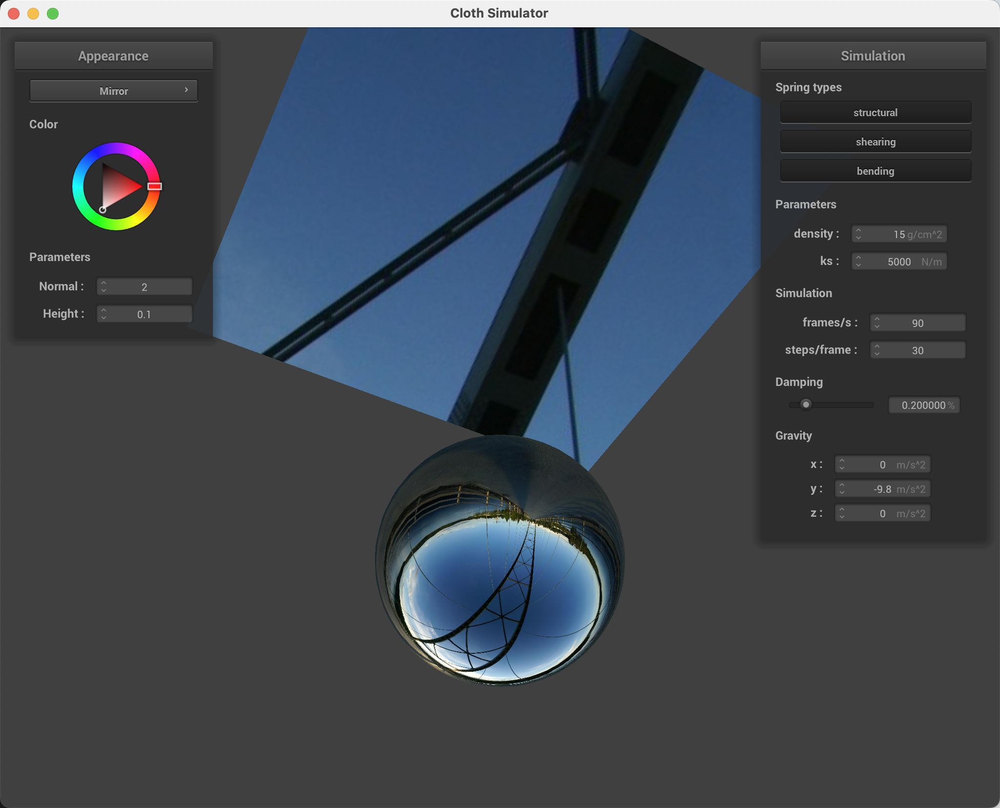

CS 184: Computer Graphics and Imaging, Spring 2024
Project 4: Cloth Simulator
Lucy Meng & Michael Yu
https://cal-cs184-student.github.io/hw-webpages-sp24-ssorbetto/hw4/index.html
Overview
For this project, we implemented a cloth simulation from applying forces on a system of masses and springs.
We are able to accurately simulate the cloth's movements by computing the total force acting on each point mass
with the help of Newton's 2nd law for external forces, Hooke's law for spring correction forces, Verlet's integration
to compute the new locations, and constraining the changes to less than 10% of the spring's length.
To avoid falling straight through objects (for example, the plane and sphere) as well as more accurately depict
the cloth's trajectory, we handled collision and self collisions. Lastly, we incorporated shaders
to create lightning and material effects. Overall, we enjoyed the aesthetic nature of some of the shaders
and the real time simulations of the cloth's motion.
However, understanding the mathematics behind physics and geometry was frusturating at times.
Part 1: Masses and springs
In part 1, we built a grid of masses based on the cloth's respective orientation and pinned masses, adjusting the x and y component to the width and height and number of points.
The third dimension was either held constant at 1 or generated with a small random offset.
Additionally, we added springs to address structural (to every point left and above), shearing (to every point diagonal upper left and right), and bending (to every point two left and above) constraints.
Take some screenshots of scene/pinned2.json from a viewing angle where you can clearly see the cloth wireframe
to show the structure of your point masses and springs.
|
|
Initial configuration ($\text{ks} = 5,000$)
|
|
|
Show us what the wireframe looks like (1) without any shearing constraints,
(2) with only shearing constraints, and (3) with all constraints.
|
No shearing constraints
|
|
Only shearing constraints
|
|
All constraints
|
Part 2: Simulation via numerical integration
Experiment with some the parameters in the simulation.
To do so, pause the simulation at the start with P, modify the values of interest, and then resume by pressing P again.
You can also restart the simulation at any time from the cloth's starting position by pressing R.
Describe the effects of changing the spring constant ks; how does the cloth behave from start to rest with a very low ks?
A high ks?
As the spring constant increases, there are larger spring forces between each time stamp and
the movements between point masses are more constrained, restricting the movement of the cloth and stabilizing quickly.
Conversely, a low spring constant has weaker forces, therefore the cloth flops more easier,
taking longer to reach steady state.
With a high ks (eg 10000), the movement of the cloth is more restricted and tense.
With a low ks (eg 1000), the movement of the cloth is more bouncy and loose.
What about for density?
The higher the density, the higher the mass the more forces acting on it and the more movement across the cloth.
The higher the density (eg 25), the more movement across the cloth and the cloth bounces more before it settles.
The lower the density (eg 5), the quicker the cloth stabilizes and there are less ripples across the cloth.
What about for damping?
The higher the damping, the number of oscillations decrease and the more slowly the cloth falls.
The higher the % damping, the slower the cloth falls, resulting in less movement.
The lower the % damping (towards 0), the faster the cloth moves and falls, resulting in more movement.
For each of the above, observe any noticeable differences in the cloth compared to the default parameters
and show us some screenshots of those interesting differences and describe when they occur.
|
Default Parameters with ks=1000N/m
|
Default Parameters with ks=10000N/m
|
|
|
Default Parameters with Density = 1g/cm^2
|
Default Parameters with Density = 50g/cm^2
|
|
|
Default Parameters with Damping 0%
|
Default Parameters with Damping 1%
|
|
The figures reflect the observed behavior described above.
Show us a screenshot of your shaded cloth from scene/pinned4.json in its final resting state!
If you choose to use different parameters than the default ones, please list them.
Pinned 4 Final Resting State with Default Parameters
Part 3: Handling collisions with other objects
To compute collisions with other objects, we need to first find the tangent / intersection point.
In the case of the sphere, we can extend the radius from the origin in the direction of the point.
In the case of the plane, we can compute the distance from the dot product and find the tangent point to the plane.
Then, we need to apply the correction in the appropriate direction. If the point is already intersects the sphere or plane, we don't need to apply any corrections.
Lastly, we can adjust the last position as follow from the correction.
Show us screenshots of your shaded cloth from scene/sphere.json in its final resting state
on the sphere using the default ks = 5000 as well as with ks = 500 and ks = 50000.
|
$\text{ks} = 500N/m$
|
Initial configuration ($\text{ks} = 5,000N/m$)
|
$\text{ks} = 50,000N/m$
|
|
Describe the differences in the results.
Similar to as described in part 2, the higher the ks the stiffer the cloth and the lower the ks the looser the cloth.
As we increase ks (50000 N/m) from the initial ks, the cloth juts out relative to the default ks (5000 N/m) - it is overall stiffer.
As we decrease ks (500 N/m) from the initial ks, the cloth hangs closer to the sphere relative to the default ks (5000 N/m) - it is overall looser.
Show us a screenshot of your shaded cloth lying peacefully at rest on the plane.
If you haven't by now, feel free to express your colorful creativity with the cloth!
(You will need to complete the shaders portion first to show custom colors.)
Part 4: Handling self-collisions
Show us at least 3 screenshots that document how your cloth falls and folds on itself,
starting with an early, initial self-collision
and ending with the cloth at a more restful state (even if it is still slightly bouncy on the ground).
|
Self collision 1
|
Self collision 2
|
Self collision 3
|
|
|
Self collision 4
|
Self collision 5
|
Self collision 6
|
|
Vary the density as well as ks
and describe with words and screenshots how they affect the behavior of the cloth as it falls on itself.
|
$\text{density} = 1$ - mid
|
 $\text{density} = 1$ - during
$\text{density} = 1$ - during
|
$\text{density} = 1$ - final
|
|
$\text{density} = 50$ - mid
|
 $\text{density} = 50$ - during
$\text{density} = 50$ - during
|
$\text{density} = 50$ - final
|
|
$\text{ks} = 1,000$ - mid
|
$\text{ks} = 1,000$ - during
|
$\text{ks} = 1,000$ - final
|
|
$\text{ks} = 10,000$ - mid
|
$\text{ks} = 10,000$ - during
|
$\text{ks} = 10,000$ - final
|
Following the same trends as detailed in earlier sections, when density increases there is more movement within the cloth due to the higher mass.
When the spring constant ks increases, the stiffer the cloth's movements due to the constraints upon the large spring forces.
From the figures above, we can see that as density decreases, the cloth falls smoother; this is most clearly displayed in the "during" falling figure.
From the figures above, we can see that as ks increases, the cloth falls smoother; this is most prominently depicted in the "mid" falling figure.
This is indicated by the lower number of smooth rolls in the ks = 10,000 figure and higher number of wrinkles in the ks = 1000 figure.
Part 5: Cloth Sim
Explain in your own words what is a shader program and how vertex and fragment shaders work together to create lighting and material effects.
Shaders are programs that run on GPU, which is a significant speedup from raytracing computations on CPU, and a part of the graphics pipeline, computing the color of the rendered pixel (a 4d vector).
The vertex shader transforms vertex data to update the scene and setup geometric attributes and passes it to the fragment shader, which defines the final color of the pixel.
By performing the vertex processing of the positions, normals, and coordinates in the vertex shader, the fragment shader applies the lighting and material effects to that vertex data.
Explain the Blinn-Phong shading model in your own words.
Show a screenshot of your Blinn-Phong shader outputting only the ambient component, a screen shot only outputting the diffuse component, a screen shot only outputting the specular component, and one using the entire Blinn-Phong model.
Blinn-Phong shading combines ambient, diffuse, and specular lighting to add shiny highlights to the scene and make it look more realistic.
More specifically, this shading model captures the specular compenent by computing a half way vector and applying the normal and shininess property.
|
Ambient component only (ka = 0.1)
|
Diffuse component only (kd = 0.8)
|
Specular component only (ks = 0.6, p=100)
|
Complete Blinn-Phong model
|
|
Ambient component only (ka = 0.1)
|
Diffuse component only (kd = 0.8)
|
Specular component only (ks = 0.6, p=100)
|
 Complete Blinn-Phong model
Complete Blinn-Phong model
|
Show a screenshot of your texture mapping shader using your own custom texture by modifying the textures in /textures/.
Show a screenshot of bump mapping on the cloth and on the sphere.
Show a screenshot of displacement mapping on the sphere.
Use the same texture for both renders.
You can either provide your own texture or use one of the ones in the textures directory,
BUT choose one that's not the default texture_2.png.
Compare the two approaches and resulting renders in your own words.
Compare how your the two shaders react to the sphere by changing the sphere mesh's coarseness by using -o 16 -a 16 and then -o 128 -a 128.
|
Bump Mapping on the Cloth
|
Bump Mapping on the Sphere
|
|
|
Displacement Mapping on the Sphere (-o 16 -a 16)
|
Displacement Mapping on the Sphere (-o 128 -a 128)
|
|
For the bump rendering, we computed the local space normal and transformed from the object space to the model space with the tangent-bitangent-normal (TBN) matrix to calculate the displaced world space normal.
The displacement rendering, we adjusted the position of the verticies to encode the height information by scaling with the original model space vertex normal, height encoding, and scaling factor.
The more coarse the mesh (16), the more we can see the differences in the displacement of the sphere and its deformities.
On the other hand, the less coarse the mesh (128), the more defined and realistic looking the surface is.
Show a screenshot of your mirror shader on the cloth and on the sphere.
|
Mirror Shader on the Cloth
|

Mirror Shader on the Sphere
|
|
Contributions
We worked through each task together as well as the write up and discussed different approaches to express the mathematical relationships.